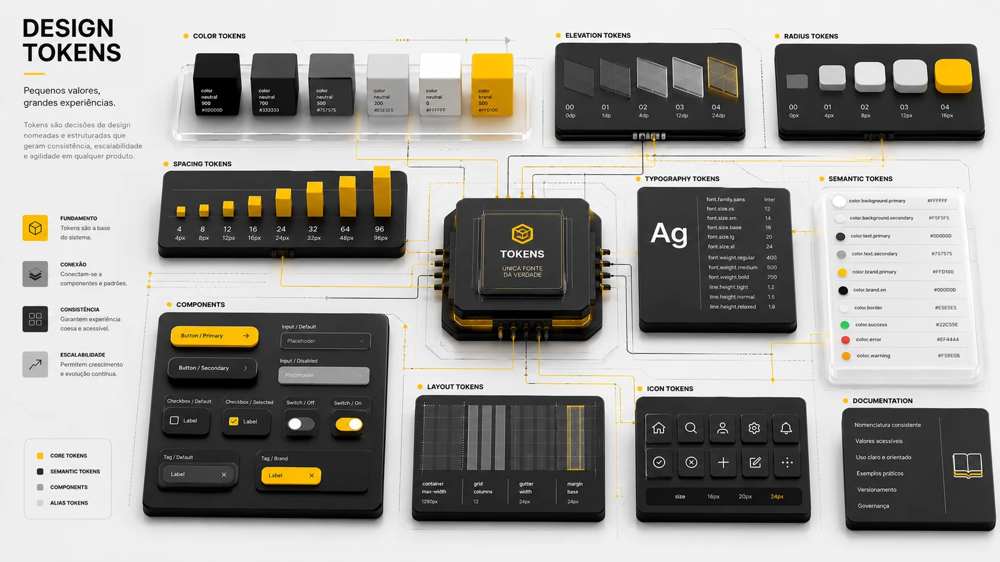

Projetos Selecionados✦Projetos Selecionados✦Projetos Selecionados✦Projetos Selecionados✦Projetos Selecionados✦Projetos Selecionados✦Projetos Selecionados✦Projetos Selecionados✦Projetos Selecionados✦Projetos Selecionados✦

01
MRV
Ecossistema Financeiro
Redesign do autoatendimento financeiro da maior construtora da América Latina, com 27% de engajamento e 14% de conversão autônoma no piloto.
Ver case02
Ford
Immersion Room
Identidade visual e design system espacial para sala de imersão que traduziu um ano de pesquisa cross-cultural em experiência tangível.
Ver case

03
Delta
Design System
Tokens, componentes e bibliotecas que criei e mantive para múltiplos produtos na Escale.
Ver case04
Chorume
Tipografia
Tipografia vernacular, branding e direção de arte para um produto fictício premiado.
Ver case